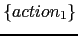
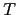

$n), pero no a los que le siguen.
Cuando se inserta una acción

para su ejecución en medio de una regla
 :
:
eyapp crea una variable sintáctica temporal 
e introduce una nueva regla:
Las acciones en mitad de una regla cuentan como un símbolo mas en la parte derecha de la regla. Asi pues, en una acción posterior en la regla, se deberán referenciar los atributos de los símbolos, teniendo en cuenta este hecho.
Las acciones en mitad de la regla pueden tener un atributo.
Las acciones posteriores
en la regla se referirán a él como $_[n], siendo n su número de orden
en la parte derecha.
Observe que la existencia de acciones intermedias implica que la gramática inicial es modificada. La introducción de las nuevas reglas puede dar lugar a ambiguedades y/o conflictos. Es responsabilidad del programador eliminarlos. Por ejemplo, dada la gramática:
cs : '{' decs ss '}' | '{' ss '}' ;
Si la modificamos como sigue:
cs : { decl(); } '{' decs ss '}'
| '{' ss '}'
;
habremos introducido un conflicto.
cs : { decl(); } '{' decs ss '}'
| { decl(); } '{' ss '}'
;
Explique donde está el fallo de esta propuesta
cs : tp '{' decs ss '}'
| tp { decl(); } '{' ss '}'
;
tp : /* empty */ { decl(); }
;